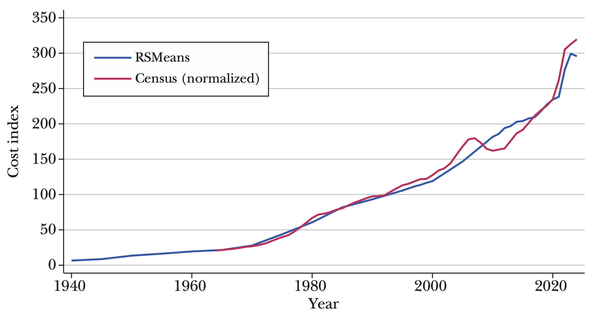
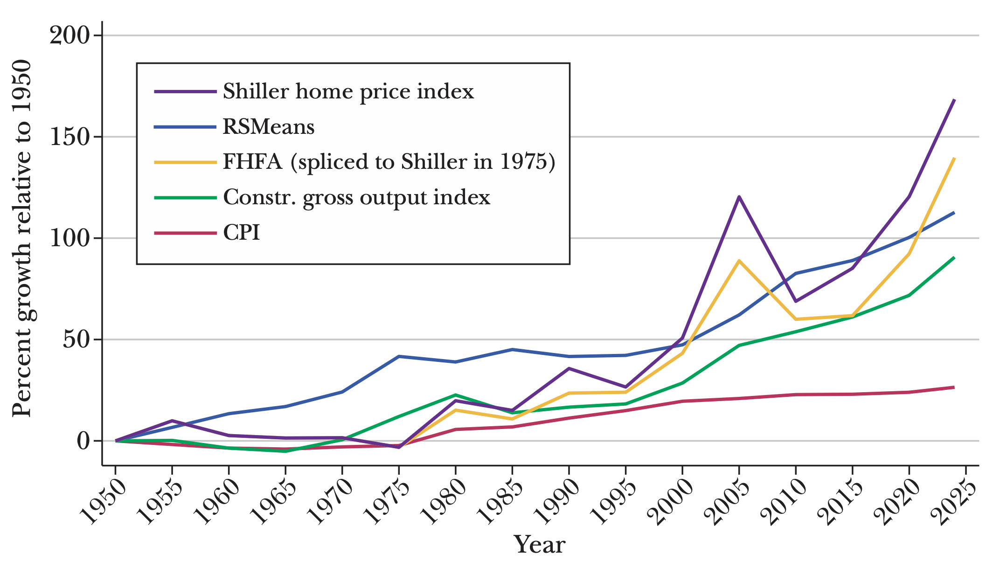

The core of our empirical analysis compares metrics of house construction costs to house prices. For construction costs, we rely on the Housing Cost database from RSMeans, a company that has been supplying cost estimate data to the construction industry since the mid-twentieth century. RSMeans describes its cost estimates—which capture the costs and margins associated with actually constructing a building, but exclude ancillary and land acquisition costs—as being compiled "through a combination of field research, industry surveys, cost modeling, and partnerships with construction professionals and suppliers." The validity of the RSMeans data are reflected in part in their extensive use in the construction and building materials industries. Researchers have used them too. For example, Glaeser and Gyourko (2018), Kakar, Daniels, and Grossman (2018), and Duranton and Puga (2023) use RSMeans data to measure construction costs.1 Our version of the data contains detailed building cost estimates and indexes for various US cities.
To better understand how well RSMeans data track actual construction costs, we compare them to two other widely known indexes of housing construction costs.
First, the Census Single-Family Houses under Construction price index tracks the change in cost in single-family homes using home price data from the Census Bureau's Survey of Construction. The Survey measures housing construction activity by sampling from several hundred local permit-issuing offices, as well as canvassing land areas that do not issue permits. The values under construction exclude the cost of land, and thus track actual house construction costs while avoiding potentially confounding land scarcity effects.
Figure 2 plots the two series together (we normalize the Census index's 1965 start to the contemporaneous level of the RSMeans index). They track each other closely, with the price volatility around the housing boom and bust in the late 2000s being the times of the greatest departures.

The Census comparison is a useful verification that the RSMeans data track nationwide changes in construction costs, but it would also be worthwhile to compare the RSMeans data for individual cities. For this comparison, we use the Turner and Townsend International Construction Market Survey, which tracks construction costs across a range of building types in major cities around the world.2
We compare the RSMeans and Turner and Townsend data for seven major US cities in 2019 and five major US cities in 2024. Turner and Townsend construct their data through a multi-input process similar to that used by RSMeans. Here is how we build this comparison: We use each dataset to produce cost estimates expressed in dollars, which we then normalize into an index by setting it equal to 1 for Houston, the lowest-cost city in both indexes. The data are in Table 1. There are high cross-city correlations between the two measures, ranging from 0.70 to 0.97, though RSMeans indicates somewhat lower costs than Turner and Townsend for the very high-cost cities of New York and San Francisco. While tempered by the fact that the number of comparable cities is small, we take this correspondence as indicating RSMeans data usefully reflect building cost differences across geographies as well.
| Townhouse | High-rise apartment | RSMeans | ||
|---|---|---|---|---|
| Panel A. 2024 (normalized to Houston) | ||||
| Houston | 1.00 | 1.00 | 1.00 | |
| Chicago | 1.06 | 1.42 | 1.38 | |
| Los Angeles | 1.80 | 1.60 | 1.32 | |
| San Francisco | 1.85 | 2.25 | 1.48 | |
| New York | 1.87 | 2.29 | 1.47 | |
| Correlation | 0.70 | 0.88 | ||
| Townhouse | Single-family home (median quality) | Single-family home (prestige quality) | RSMeans | |
| Panel B. 2019 (normalized to Houston) | ||||
| Houston | 1.00 | 1.00 | 1.00 | 1.00 |
| Phoenix | 1.02 | 1.02 | 1.02 | 1.04 |
| Atlanta | 1.04 | 1.04 | 1.04 | 1.04 |
| Chicago | 1.19 | 1.20 | 1.40 | 1.41 |
| Seattle | 1.68 | 1.73 | 1.33 | 1.25 |
| New York | 1.93 | 2.15 | 1.43 | 1.57 |
| San Francisco | 2.45 | 2.09 | 1.52 | 1.52 |
| Correlation | 0.82 | 0.86 | 0.97 | |
We begin exploring the connection between homebuilding costs and house prices with a look at long-run trends. Figure 3 shows multiple price indexes over the last three-fourths of a century. In addition to the RSMeans house building cost index already discussed and the Consumer Price Index from the Bureau of Labor Statistics, it also includes several other indexes. The "construction sector gross output price index" is from the Bureau of Economic Analysis (BEA) industry accounts, which the BEA builds to capture the evolution of prices for all of the sector's outputs (including houses, other buildings, and public works). Goolsbee and Syverson (2024) employ this index in their study of construction sector productivity, for example. The housing price index produced by the Federal Housing Finance Agency (FHFA) is constructed from transaction data from Fannie Mae and Freddie Mac using repeat sales or refinancings of the same house. In so doing, it adjusts more thoroughly than cross-sectional samples for quality changes in the housing stock. For examples of research using this index, useful starting points are Guerrieri, Hartley, and Hurst (2013), Charles, Hurst, and Notowidigdo (2018), and Glaeser and Gyourko (2025). We further include the Shiller home price index, which is a composite of Census-division-level single-family home price indices. Like the FHFA index, this is also calculated based on previous sales of the same home. Examples of its use in research include Case and Shiller (2003), Mian and Sufi (2009), and Glaeser, Gottlieb, and Gyourko (2013).

Each of these indexes has already been normalized by the GDP deflator over the entire period. As such, they reflect trends relative to that deflator. Clearly, each grew faster than the GDP deflator over the period.
Several patterns are apparent here. First, construction-related prices of all sorts—whether captured by building costs, construction output deflators, or house prices—grew faster than the other consumer-related prices in the Consumer Price Index. While the CPI saw cumulative growth of about 20 percent relative to the GDP deflator, construction sector gross output prices almost doubled, and housing construction costs and prices both more than doubled. This outsized growth, at least in the latter two-thirds of the sample period, is consistent with the aforementioned productivity underperformance of the sector relative to the rest of the economy post-1970 (D'Amico et al. 2024; Goolsbee and Syverson 2024; Garcia and Molloy 2025).
Second, for much of the early period, cumulative growth in construction costs, as reflected in the RSMeans data, outpaced housing prices. In fact, cumulative growth in the Shiller house price index over 1950–1975 was 30 percent less than comparable change in the RSMeans building cost index. In the late 1970s, however, house prices started rising faster than construction costs. Within the time horizon of the figure, cumulative price growth finally caught up to and surpassed cost growth in the late 1990s.
Third, there were two separate periods where post-1950 cumulative growth in housing prices was notably above the same for building costs: the mid-2000s, during the run-up to the subprime mortgage lending–driven financial crisis; and most recently, from the mid-2010s to the present. While the mid-2000s house price spike did not coincide with a similar acceleration in building costs, this is less true for the contemporaneous bout of price growth. House prices and building costs alike have recently risen substantially faster than their prior growth rates, though housing prices have risen more quickly.
Ultimately, over the entire sweep of the data, house prices cumulatively rose only modestly more than the increase in building costs: about 25 percent more using the Shiller housing price index, and only 10 percent more if we splice the Federal Housing Finance Agency index to the Shiller index in 1975. If we focus on the trends since 1975, however, the differences are starker. Cumulative house price growth using the FHFA index outpaced building costs by over 60 percent; the difference using the Shiller housing index is 80 percent.3 This pattern of increasingly divergent building costs and house prices in recent decades will repeat itself in our discussion below. Note, interestingly, that this divergence occurs throughout a period where construction productivity growth was very poor. That is, while building cost inflation may well have contributed to high house price growth in recent years, other factors must have made an additional and substantial contribution.